Comandos do R utilizados nas aulas
Aula 01 - \(01/09/2020\):
Introdução ao R
## Criando um vetor de números
x <- c(1,2,3,4,5,6,7,80)
x[1] 1 2 3 4 5 6 7 80## verificando a classe do objeto
class(x)[1] "numeric"## Selecionando o valor do vetor na posição 8
x[8][1] 80## Criando uma matriz
X <- matrix(data= c(1,2,3,4),
ncol = 2,
byrow=TRUE)
X [,1] [,2]
[1,] 1 2
[2,] 3 4Y <- matrix(c(2,4,5,8,6,8),
ncol=2,
byrow = TRUE)
Y [,1] [,2]
[1,] 2 4
[2,] 5 8
[3,] 6 8## Multiplicando as duas matrizes
Y%*%X [,1] [,2]
[1,] 14 20
[2,] 29 42
[3,] 30 44## Selcionando o valor da linha 1 coluna 2 da matriz Y
Y[1,2][1] 4Funções estatística básica
## Criando um vetor aleatório de 100 valores de uma distribuição Normal com média 0 e variância 1
x <- rnorm(100)
## Inspecionando os primeiros valores do vetor
head(x,n=3)[1] 0.8020049 1.1610981 1.3901011## Inspecionando os últimos valores do vetor
tail(x,n=3)[1] 0.07590595 -0.80607854 1.21548914## Media = somatório x_i/n - Função para méria aritmética
media <- function(x){
soma = 0
for(i in 1:length(x))
soma = soma + x[i]
media = soma/length(x)
return(media)
}
media(x)[1] 0.086242mean(x)[1] 0.086242Intervalo de confiança
# LI = media - Z*desvio_padrão/raiz(n)
# LS = media + Z*desvio_padrão/raiz(n)
IC <- function(x, conf = 0.95){
avg = media(x)
z = c(-qnorm(conf),qnorm(conf))
dp = sd(x)
n = length(x)
raizn <- sqrt(n)
#li = avg - z*(dp/raizn)
#ls = avg + z*(dp/raizn)
ic <- avg + z*(dp/raizn)
return(paste("IC(95%)= (", round(ic[1],2),";",round(ic[2],2),")"))
}
IC(x)[1] "IC(95%)= ( -0.08 ; 0.26 )"Exemplo de acesso a dados
## Listando arquivos
dir(pattern = '.csv')[1] "hospital.csv" "web_data.csv"## Carregando um conjunto de dados no formato csv
dados <- read.csv("hospital.csv",
header = TRUE, sep ='\t')
head(dados) idade setor temperatura freq_respiratoria pa_sistolica pa_diastolica pa_media sat_o2 alta.motivo
1 87 UTIG 36.0 18 128 75 93 91 Obito
2 53 1AP2 35.4 14 117 67 84 100 Obito
3 63 UTIG 36.4 40 149 75 100 78 Obito
4 84 UTIG 36.4 40 149 75 100 78 Obito
5 99 4AP2 36.3 16 80 60 67 94 Obito
6 50 UTIG 34.4 17 140 100 113 94 Obitodim(dados)[1] 5001 9## Estrutura dos dados
str(dados)'data.frame': 5001 obs. of 9 variables:
$ idade : int 87 53 63 84 99 50 51 48 82 57 ...
$ setor : Factor w/ 17 levels "","1AP1","1AP2",..: 16 3 16 16 12 16 3 3 16 15 ...
$ temperatura : num 36 35.4 36.4 36.4 36.3 34.4 35 36 34 37.6 ...
$ freq_respiratoria: int 18 14 40 40 16 17 18 93 19 26 ...
$ pa_sistolica : int 128 117 149 149 80 140 100 100 112 156 ...
$ pa_diastolica : int 75 67 75 75 60 100 60 60 59 50 ...
$ pa_media : int 93 84 100 100 67 113 73 73 77 85 ...
$ sat_o2 : int 91 100 78 78 94 94 96 93 100 97 ...
$ alta.motivo : Factor w/ 2 levels "Melhorado","Obito": 2 2 2 2 2 2 2 2 2 2 ...Sumário dos dados
## Aplicando a função media criada
media(dados$idade)[1] 47.55209## Listando os nomes das variáveis
names(dados)[1] "idade" "setor" "temperatura" "freq_respiratoria" "pa_sistolica" "pa_diastolica" "pa_media" "sat_o2"
[9] "alta.motivo" ## Selecionando apenas as variáveis numéricas
var_num <- dados[,c(1,3:8)]
str(var_num)'data.frame': 5001 obs. of 7 variables:
$ idade : int 87 53 63 84 99 50 51 48 82 57 ...
$ temperatura : num 36 35.4 36.4 36.4 36.3 34.4 35 36 34 37.6 ...
$ freq_respiratoria: int 18 14 40 40 16 17 18 93 19 26 ...
$ pa_sistolica : int 128 117 149 149 80 140 100 100 112 156 ...
$ pa_diastolica : int 75 67 75 75 60 100 60 60 59 50 ...
$ pa_media : int 93 84 100 100 67 113 73 73 77 85 ...
$ sat_o2 : int 91 100 78 78 94 94 96 93 100 97 ...## Resumo da variável idade
summary(dados$idade) Min. 1st Qu. Median Mean 3rd Qu. Max.
0.00 32.00 49.00 47.55 66.00 103.00 ## Resumo de todas variáveis numéricas
for(i in 1:length(names(var_num))){
print(summary(var_num[i]))
} idade
Min. : 0.00
1st Qu.: 32.00
Median : 49.00
Mean : 47.55
3rd Qu.: 66.00
Max. :103.00
temperatura
Min. : 0.00
1st Qu.:35.70
Median :36.00
Mean :36.02
3rd Qu.:36.30
Max. :39.70
NA's :3
freq_respiratoria
Min. : 0.0
1st Qu.: 16.0
Median : 18.0
Mean : 17.2
3rd Qu.: 19.0
Max. :418.0
NA's :5
pa_sistolica
Min. : 0.0
1st Qu.:100.0
Median :120.0
Mean :107.2
3rd Qu.:130.0
Max. :230.0
NA's :2
pa_diastolica
Min. : 0.00
1st Qu.: 60.00
Median : 70.00
Mean : 65.75
3rd Qu.: 80.00
Max. :148.00
NA's :2
pa_media
Min. : 0.00
1st Qu.: 77.00
Median : 87.00
Mean : 79.52
3rd Qu.: 93.00
Max. :170.00
NA's :2
sat_o2
Min. : 0.00
1st Qu.: 94.00
Median : 96.00
Mean : 94.78
3rd Qu.: 98.00
Max. :147.00
NA's :1315 Gráficos
## Gráfico de dispersão
plot(var_num$idade)
## Histograma
hist(var_num$idade)
## Histograma de todas as variáveis numéricas
par(mfrow=c(2,4))
lapply(var_num,hist)
Gráfico - ggplot2
library(ggplot2)
var_num$id <- 1:dim(var_num)[1]
df <- reshape2::melt(var_num, id.vars = 'id', variable.name = "serie")
ggplot(df, aes(id,value)) +
geom_line(aes(colour = serie)) +
facet_grid(serie ~ .)
Probabilidade
Exemplo de espaço amostra
## Lançamento de dois dados
### QUantidade de possibilidades
6^2[1] 36## Número de faces
amostral <- 1:6
amostral[1] 1 2 3 4 5 6## Espaço amostral
n <- 3000
sorteio1 <- NULL
for(i in 1:n)
sorteio1 <- c(sorteio1,
paste(sample(x = amostral,
replace = TRUE,
size = 2),
collapse =""))
length(unique(sorteio1))[1] 36sorteio1 <- sort(unique(sorteio1))
sorteio1 [1] "11" "12" "13" "14" "15" "16" "21" "22" "23" "24" "25" "26" "31" "32" "33" "34" "35" "36" "41" "42" "43" "44" "45" "46" "51" "52" "53" "54" "55" "56" "61" "62" "63" "64" "65"
[36] "66"## Lançamento de três dados
### QUantidade de possibilidades
6^3[1] 216## Espaço amostral
n <- 3000
sorteio2 <- NULL
for(i in 1:n)
sorteio2 <- c(sorteio2,paste(sample(x = amostral,
replace = TRUE,
size = 3),collapse =""))
length(unique(sorteio2))[1] 216sorteio2 <- sort(unique(sorteio2))
sorteio2 [1] "111" "112" "113" "114" "115" "116" "121" "122" "123" "124" "125" "126" "131" "132" "133" "134" "135" "136" "141" "142" "143" "144" "145" "146" "151" "152" "153" "154" "155"
[30] "156" "161" "162" "163" "164" "165" "166" "211" "212" "213" "214" "215" "216" "221" "222" "223" "224" "225" "226" "231" "232" "233" "234" "235" "236" "241" "242" "243" "244"
[59] "245" "246" "251" "252" "253" "254" "255" "256" "261" "262" "263" "264" "265" "266" "311" "312" "313" "314" "315" "316" "321" "322" "323" "324" "325" "326" "331" "332" "333"
[88] "334" "335" "336" "341" "342" "343" "344" "345" "346" "351" "352" "353" "354" "355" "356" "361" "362" "363" "364" "365" "366" "411" "412" "413" "414" "415" "416" "421" "422"
[117] "423" "424" "425" "426" "431" "432" "433" "434" "435" "436" "441" "442" "443" "444" "445" "446" "451" "452" "453" "454" "455" "456" "461" "462" "463" "464" "465" "466" "511"
[146] "512" "513" "514" "515" "516" "521" "522" "523" "524" "525" "526" "531" "532" "533" "534" "535" "536" "541" "542" "543" "544" "545" "546" "551" "552" "553" "554" "555" "556"
[175] "561" "562" "563" "564" "565" "566" "611" "612" "613" "614" "615" "616" "621" "622" "623" "624" "625" "626" "631" "632" "633" "634" "635" "636" "641" "642" "643" "644" "645"
[204] "646" "651" "652" "653" "654" "655" "656" "661" "662" "663" "664" "665" "666"Exemplo definição clássica de probab.
### E1= (1,1) - Calcular probabilidade dos dados terem faces iguais
amostral <- 1:6
amostral[1] 1 2 3 4 5 6## Selcionando a primeira face do dado
dado1 <- substr(sorteio1,1,1)
## Selcionando a segunda face do dado
dado2 <- substr(sorteio1,2,2)
## Verificando se são iguais
iguais <- ifelse(dado1 == dado2, sorteio1,"excluir")
iguais [1] "11" "excluir" "excluir" "excluir" "excluir" "excluir" "excluir" "22" "excluir" "excluir" "excluir" "excluir" "excluir" "excluir" "33" "excluir" "excluir"
[18] "excluir" "excluir" "excluir" "excluir" "44" "excluir" "excluir" "excluir" "excluir" "excluir" "excluir" "55" "excluir" "excluir" "excluir" "excluir" "excluir"
[35] "excluir" "66" ## Guardando as face iguais em um objeto
iguais <- iguais[iguais != "excluir"]
## Aplicando a definição clássica de probabilidade
PE1 <- length(iguais)/length(sorteio1)
PE1[1] 0.1666667## Calculando a probabilidade de pelo menos um dados ter face 1
d_1 <- ifelse(stringr::str_detect(sorteio1,"1"),"Sim","Não")
table(d_1)/length(sorteio1)d_1
Não Sim
0.6944444 0.3055556 table(d_1)d_1
Não Sim
25 11 Aula 02 - \(15/09/2020\):
União e intersecção
## Espaço amostral= (1,2,3,4,5,6)
A <- 1:4
B <- 1:3
C <- c(2,4,6)
D <- c(2,3,5)
## Função União
uniao <- function(a,b){
u = a
for(i in 1:length(b))
if(!b[i] %in% u){
u = c(u,b[i])
}
return(u)
}
uniao(A,B)[1] 1 2 3 4uniao(A,C)[1] 1 2 3 4 6# Função pronta do R
union(A,C)[1] 1 2 3 4 6## Função para intersecção
Inter <- function(a,b){
inte <- NULL
for(i in 1:length(a))
if(a[i] %in% b){
inte <- c(inte, a[i])
}
return(inte)
}
Inter(a=A, b=B)[1] 1 2 3Inter(A,D)[1] 2 3# Função pronta do R
intersect(A,D)[1] 2 3## Complementares
amostral <- 1:6
# A complementar
Ac <- amostral[-A]
# B complementar
Bc <- amostral[-B]
# A união Ac
uniao(A, Ac)[1] 1 2 3 4 5 6# B intersecção com Bc
Inter(B, Bc)NULLRegra da Adição
rm(list=ls())
dados <- read.csv("hospital.csv",
header = T,
sep = '\t')
head(dados) idade setor temperatura freq_respiratoria pa_sistolica pa_diastolica pa_media sat_o2 alta.motivo
1 87 UTIG 36.0 18 128 75 93 91 Obito
2 53 1AP2 35.4 14 117 67 84 100 Obito
3 63 UTIG 36.4 40 149 75 100 78 Obito
4 84 UTIG 36.4 40 149 75 100 78 Obito
5 99 4AP2 36.3 16 80 60 67 94 Obito
6 50 UTIG 34.4 17 140 100 113 94 Obito##P(AuB) = P(A) + P(B) - P(AinterB)
## Criando variável dicotomica para Temperatura
dados$Temp_nivel <- ifelse(dados$temperatura <=35 |
dados$temperatura >=38.4,
"Alterada",
"Nao_Alterada")
## Criando variável dicotomica para Temperatura
dados$Resp_nivel <- ifelse(dados$freq_respiratoria <=14,
"Alterada",
"Nao_Alterada")
table(dados$Temp_nivel)
Alterada Nao_Alterada
350 4648 table(dados$Resp_nivel)
Alterada Nao_Alterada
801 4195 # A: Temperatura nao alterada
# B: Respiração não alterada
PA <- table(dados$Temp_nivel)[2]/nrow(dados)
PANao_Alterada
0.9294141 PB <- table(dados$Resp_nivel)[2]/nrow(dados)
PBNao_Alterada
0.8388322 table(dados$Temp_nivel,dados$Resp_nivel)
Alterada Nao_Alterada
Alterada 66 284
Nao_Alterada 735 3910PAinterB <- 3910/nrow(dados)
PAinterB[1] 0.7818436PAuB <- PA + PB - PAinterB
PAuBNao_Alterada
0.9864027 PA+(1-PA)Nao_Alterada
1 Probabilidade condicional
library(ggplot2)
ggplot(dados, aes(idade, fill = alta.motivo, colour = alta.motivo)) +
geom_density(alpha= 0.1, fill = 'white')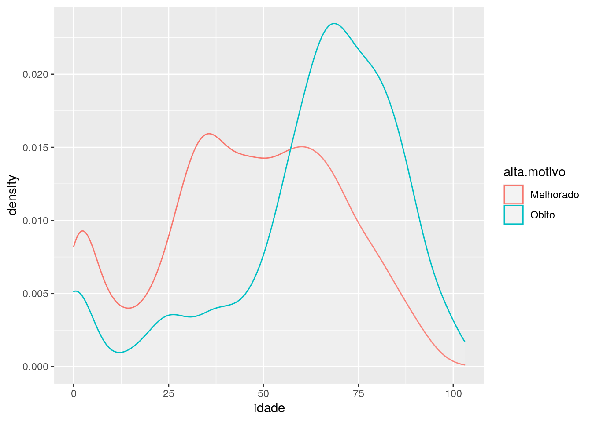
### Probabilidade de óbito
table(dados$alta.motivo)
Melhorado Obito
4572 429 PO <- table(dados$alta.motivo)[2]/nrow(dados)
PO Obito
0.08578284 # Criando faixa etária
dados$f_idade <- ifelse(dados$idade < 55,
"F1",
"F2")
table(dados$f_idade)
F1 F2
2859 2142 ## Probabilidade idade >=55
PF2 <- table(dados$f_idade)[2]/nrow(dados)
PF2 F2
0.4283143 table(dados$f_idade,dados$alta.motivo)
Melhorado Obito
F1 2760 99
F2 1812 330## P(O | idade >= 55) = P(O inter idade >=55)/P(idade >=55)
POinterF2 <- 330/nrow(dados)
POinterF2[1] 0.0659868POdadoF2 <- POinterF2/PF2
POdadoF2 F2
0.1540616 ##P(O | "idade <= 55") = P(O inter "<=55")/P("<=55")
PF1 <- 1-PF2
POdadoF1 <- (101/nrow(dados))/PF1
POdadoF1 F2
0.03532704 Regra do produto Independência de eventos
table(dados$Temp_nivel,dados$Resp_nivel)
Alterada Nao_Alterada
Alterada 66 284
Nao_Alterada 735 3910##P(AinterB) = P(A)*P(B)
PAPB <- PA*PB
PAPBNao_Alterada
0.7796225 PAdadoB <- PAinterB/PB
PAdadoBNao_Alterada
0.932062 Partição do espaço amostral
library(dplyr)
## Filtrando setores que interessam
UTI <- dados %>%
filter(setor %in% c('UTIG',
'UTIC',
'UTIP'))
UTI$setor <- droplevels(UTI$setor)
table(UTI$setor)
UTIC UTIG UTIP
66 174 34 ### P(O e UTIG) ou P(O e UTIP) ou P(O e UTIC)
### P(O e UTIG) + P(O e UTIP) + P(O e UTIC)
### P(O |UTIG)*P(UTIG) + P(O | UTIP)*P(UTIP) + P(O | UTIC)*PUTIC)
#### TMA probabilidade Total
#PA1 = P(O inter UTIG) = P(O | UTIG)*P(UTIG)
PA1 <- table(UTI$setor,UTI$alta.motivo)[5]/nrow(UTI)
PA2 <- table(UTI$setor,UTI$alta.motivo)[6]/nrow(UTI)
PA3 <- table(UTI$setor,UTI$alta.motivo)[4]/nrow(UTI)
PA1[1] 0.6240876PA2[1] 0.09124088PA3[1] 0.2408759PO <- PA1 + PA2 + PA3
PO[1] 0.9562044PUTIG <- table(UTI$setor)[2]/nrow(UTI)
POdadoUTIG <- PA1/PUTIG
### P(O | UTIG)*P(UTIG)
POdadoUTIG UTIG
0.9827586 # PA1 U PA2 U PA3
# TMA DA PROBABILIDADE TOTAL
PoUTI <- PA1+PA2+PA3
PoUTI[1] 0.9562044#P(O | UTIG) = PA1/PUTIG
PA1 / (174/nrow(UTI))[1] 0.9827586### P(O | UTIP)*P(UTIP)
PUTIP <- length(UTI$setor[UTI$setor == 'UTIP'])/nrow(UTI)
POdadoUTIP <- PA2/PUTIP
POdadoUTIP[1] 0.7352941TMA BAYES
## P(UTIG | O) = P(O | UTIG) * P(UTIG)/(PoUTI)
PUTIGdadoO <- PA1/PoUTI
PUTIGdadoO[1] 0.6526718Função de probabilidade (f.p.)
X <- 0:6
X[1] 0 1 2 3 4 5 6fo <- c(9,14,13,9,4,2,1)
fo[1] 9 14 13 9 4 2 1fr <- fo/52
df <- data.frame(X,fo,fr)
df X fo fr
1 0 9 0.17307692
2 1 14 0.26923077
3 2 13 0.25000000
4 3 9 0.17307692
5 4 4 0.07692308
6 5 2 0.03846154
7 6 1 0.01923077#Gráfico p(x)
p1 <- ifelse(df$fr > 1 | df$fr< 0,
'N_p(x)','p(x)')
table(p1)p1
p(x)
7 #p2
sum(df$fr)[1] 1#P(X = 2)
# P(X>2) = P(X =3 U X=4 U X=5 U X=6) = P(X=3)+P(X=4)+P(X=5)+P(X=6)
df$Fx <- cumsum(df$fr)
df X fo fr Fx
1 0 9 0.17307692 0.1730769
2 1 14 0.26923077 0.4423077
3 2 13 0.25000000 0.6923077
4 3 9 0.17307692 0.8653846
5 4 4 0.07692308 0.9423077
6 5 2 0.03846154 0.9807692
7 6 1 0.01923077 1.0000000# 1 - P(X<=2)
1-0.692307[1] 0.307693par(mfrow=c(1,2))
plot(df$X,
df$fr,
xlab='V.A.',
ylab = 'P[X=x]',
type = 'h')
plot(df$X,
df$Fx,
xlab = 'V.A.',
ylab = 'F(x)= P[X<=x]',
type = 's')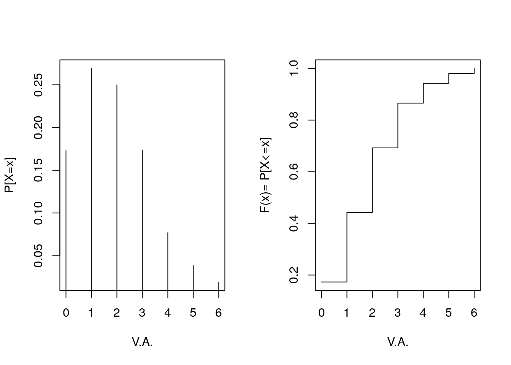
Aula 03 - \(22/09/2020\):
Modelo uniforme discreto
# X: face do dado
amostral <- 1:6
sorteio <- sample(amostral,100000,replace=TRUE)
prop.table(table(sorteio))sorteio
1 2 3 4 5 6
0.16606 0.16752 0.16405 0.16669 0.16722 0.16846 ## P[X=2]
1/6[1] 0.1666667Gráfico modelo uniforme (f.p.)
x <-1:6
px <- dunif(x,
max=6)
plot(x,
px,
xlab='V.A.',
ylab='P[X=x]',
ylim = c(0,1),
type = 'h')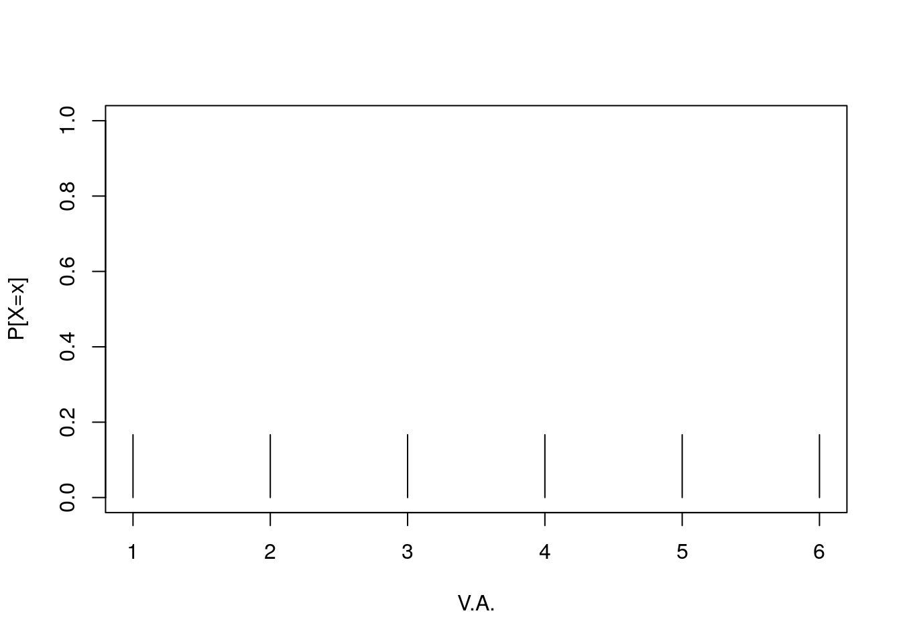
Fx <- punif(x,
max=6)
plot(x,
Fx,
xlab='V.A.',
ylab='P[X<=x]',
ylim = c(0,1),
type = 's')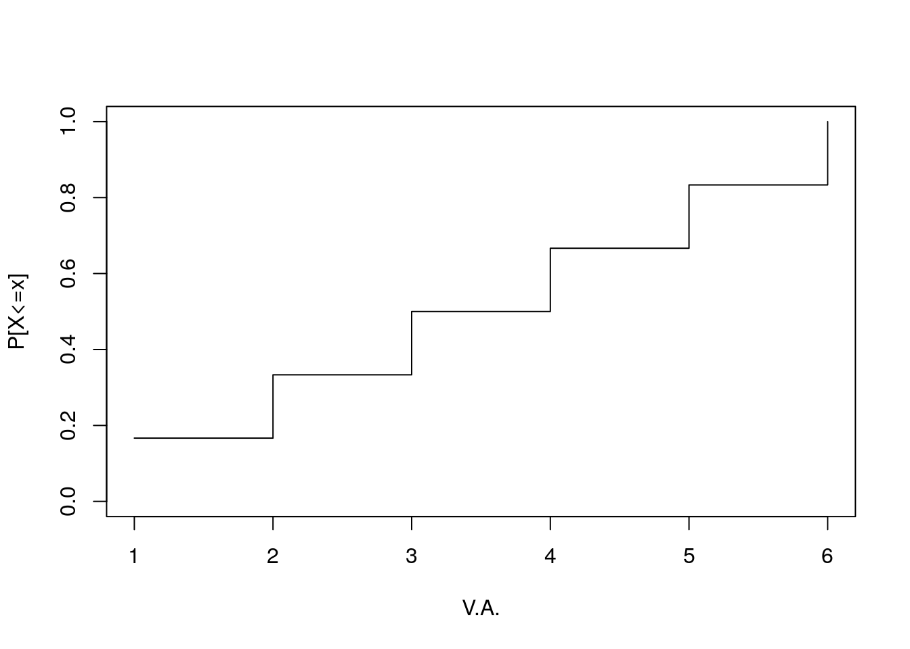
Modelo Bernoulli
dados <- read.csv('hospital.csv',
header = TRUE,
sep = '\t')
table(dados$alta.motivo)
Melhorado Obito
4572 429 # 1 - Obito
# 0 - Melhorado
ber <- function(x,p){
px = p^x*(1-p)^(1-x)
return(px)
}
prop.table(table(dados$alta.motivo))
Melhorado Obito
0.91421716 0.08578284 P <- 0.08578284
# P[X = 1]
ber(x = 1, p = P)[1] 0.08578284# P[X = 0]
ber(x = 0, p = P)[1] 0.9142172Gráfico modelo Bernoulli
plot(0:1,
c(ber(0,P),ber(1,P)),
type = 'h',
xlab = 'V.A.',
ylab = 'P[X=x]',
axes = FALSE)
axis(1,c(0,1))
axis(2,seq(0,1,.1))
box()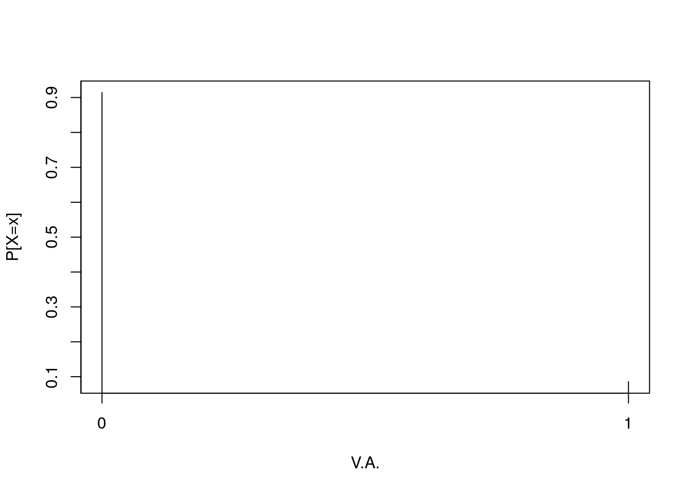
Modelo Binomial
P[1] 0.08578284# P[X = 1]
dbinom(x = 1,
size = 10,
prob = P)[1] 0.3826879Gráfico binomial f.p.
x <-0:150
px <- dbinom(0:150,
size = 1000,
prob = P)
plot(x,
px,
type = 'h',
ylim = c(0,max(px))
)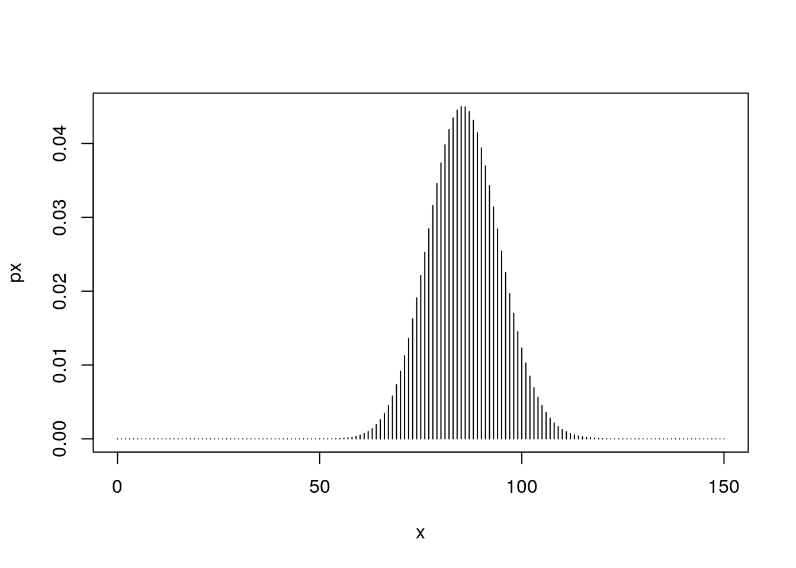
Fx <- pbinom(0:150,
size = 1000,
prob = P)
plot(x,
Fx,
type = 's',
ylim = c(0,1),
ylab = 'F(x) = P[X<=x]',
xlab = 'V.A.'
)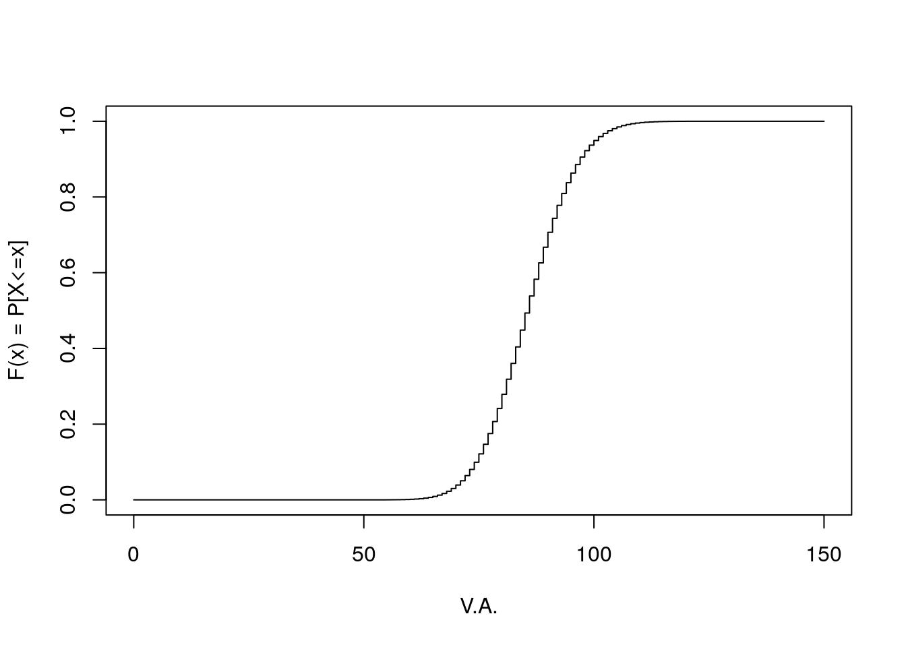
Modelo geométrico
#P[X = 10]
dgeom(10,
prob = P)[1] 0.03498599#P[X = 0]
dgeom(0,
prob = P)[1] 0.08578284#P[X = 1]
dgeom(1,
prob = P)[1] 0.07842414#P[X<=1]
pgeom(1,prob = P)[1] 0.164207Gráfico modelo geométrico
x <-0:100
px <-dgeom(x,
prob = P)
plot(x,
px,
xlab ='V.A.',
ylab = 'P[X=x]',
type = 'h')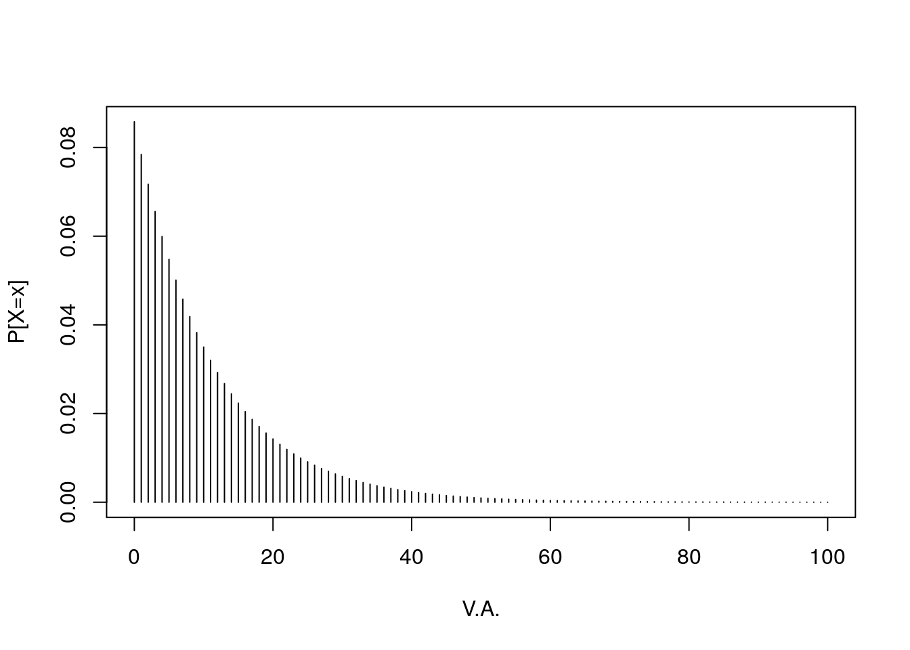
# Fx
Fx <- pgeom(x,
prob = P)
plot(x,
Fx,
xlab ='V.A.',
ylab = 'P[X<=x]',
type = 's')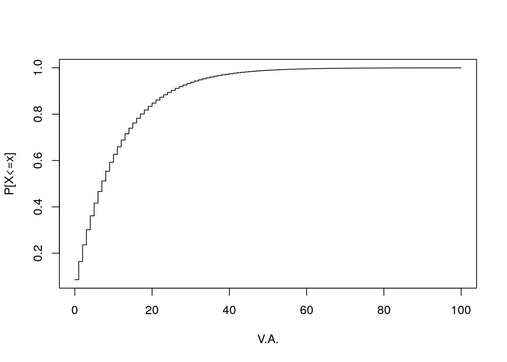
Modelo Poison
table(dados$alta.motivo)
Melhorado Obito
4572 429 lambda <- 429/180
lambda[1] 2.383333### Prob de occorrer 2 óbitos em 1 um dia - P[X = 2]
dpois(x=2,
lambda = lambda)[1] 0.2619818## P[x <= 5]
ppois(5,lambda)[1] 0.9653217Gráficos - modelo Poison
x <-0:15
px <-dpois(x,lambda)
plot(x,
px,
xlab = 'V.A.',
ylab = 'P[X=x]',
type = 'h',
axes = FALSE)
axis(1,seq(0,15,1))
axis(2,seq(0,1,0.01),cex.axis = .5)
box()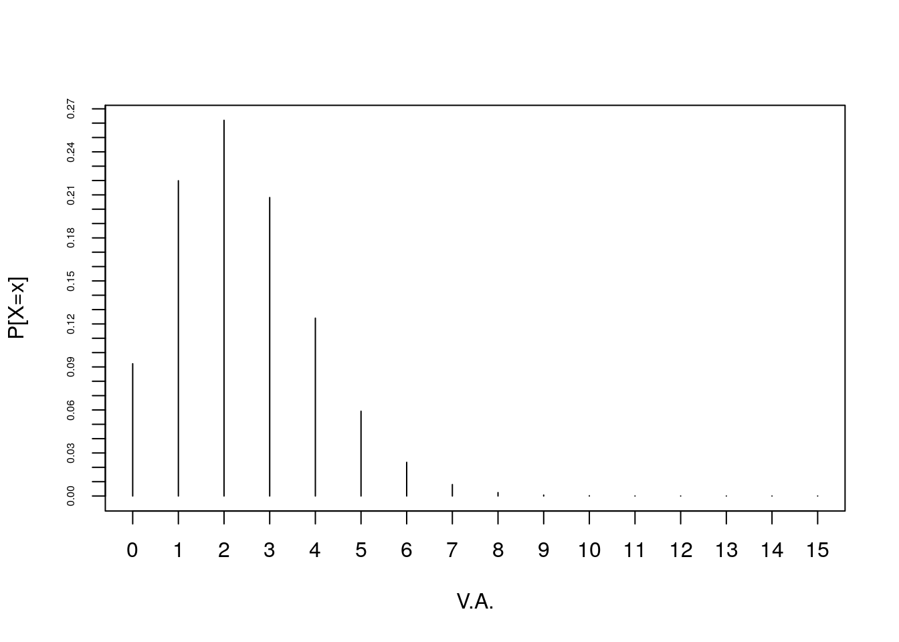
## Fx
Fx <- ppois(x,lambda)
plot(x,
Fx,
xlab = 'V.A.',
ylab = 'P[X<=x]',
type = 's',
axes = FALSE)
axis(1,seq(0,15,1))
axis(2,seq(0,1,0.01),cex.axis = .5)
box()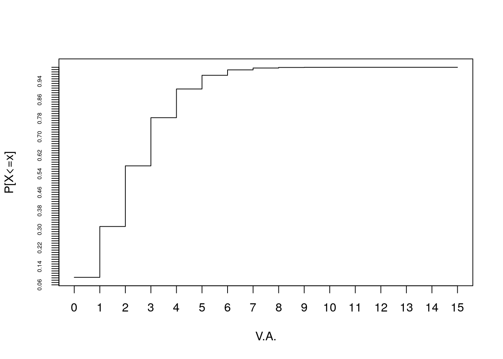
## P[X <= 3]
ppois(3,lambda)[1] 0.7821991VA contínua
fx <- function(x){
fx = ifelse(x >2 & x<6,
0.025*x+0.15,0)
return(fx)
}
integrate(fx,
lower = 2,
upper = 6)$value[1] 1curve(fx,
2,6)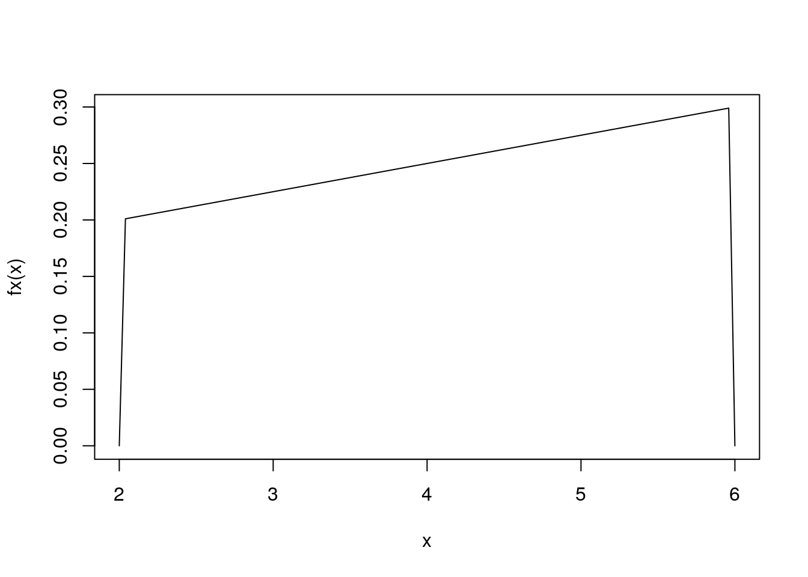
## P[2 < X < 3 ]
integrate(fx,
2,
3)$value[1] 0.2125# P[X<=5 ]
integrate(fx,
-Inf,
5)$value[1] 0.7125## Gráfico Fx
curve(fx,
2,6,
xlim = c(0,8))
x <- seq(2,5,0.01)
lines(x,
fx(x),
type = 'h',
col = 'grey')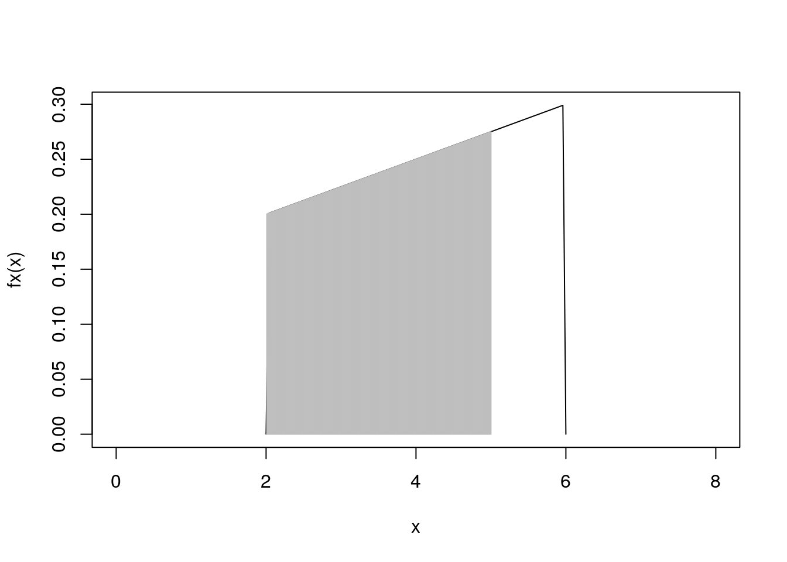
Exemplo 2
fx <- function(x){
fx = ifelse(x < 0 ,
0,
2*exp(-2*x))
return(fx)
}
integrate(fx,0,Inf)$value[1] 1##P[X > 1]
integrate(fx,
1,Inf)$value[1] 0.1353353# P[0.2 < X < 0.8]
integrate(fx,
0.2,0.8)$value[1] 0.4684235Gráfico de f(x)
plot(fx,
0,5,
xlab = 'V.A',
ylab = 'f(x)',
col = 'darkblue')
abline(v = seq(0,5,1),
h = seq(0,2,1),
lty = 2,
col = 'gray70')
polygon(x=c(1,seq(1,5,l=20)),
y=c(0,fx(seq(1,5,l=20))),
density=65)
polygon(x=c(0.2,seq(0.2,0.8,l=20),0.8),
y=c(0,fx(seq(0.2,0.8,l=20)),0),
density=65)
text(c(1.3,0.5),
c(0.08,0.08),
c(expression(0.135,0.468)),
col=c('darkred','darkred'))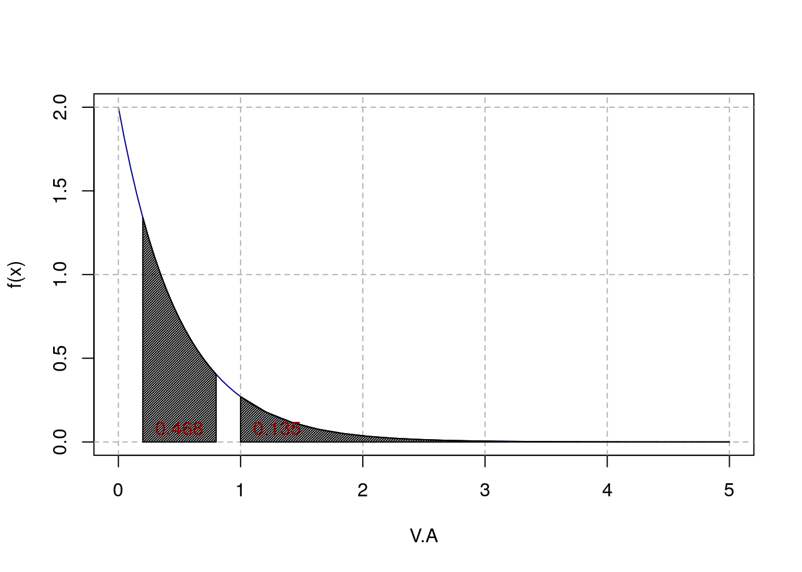
Modelo uniforme contínuo
x <- runif(5,0,1)
### Gráficos
par(mfrow=c(1,2))
curve(dunif(x, 2, 5),
xlim = c(0, 7),
ylab = 'f(x)')
curve(punif(x, 2, 5),
xlim = c(0, 7),
ylab = 'F(x)')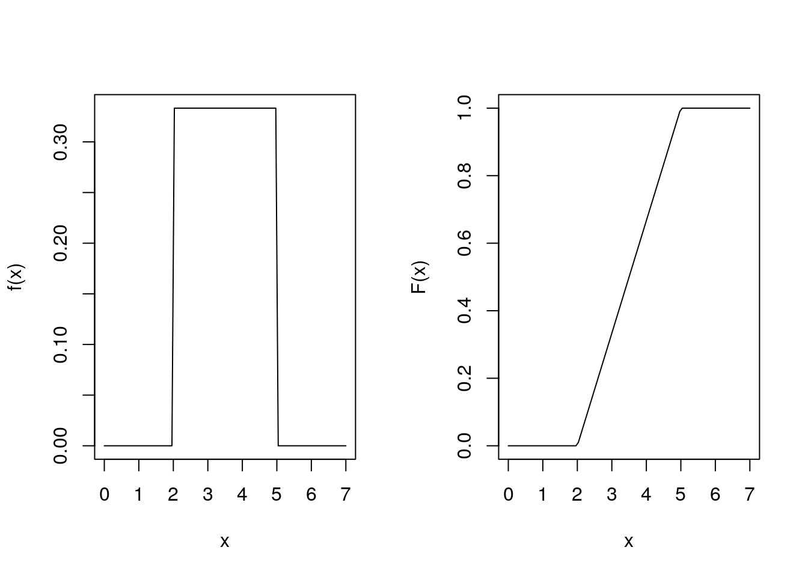
Modelo exponencial
# Calcular a probabilidade P[X ≥ 400).
1-pexp(400,
rate = 1/500)[1] 0.449329 # i. Use a função básica do `R`
1-pexp(400,rate=1/500)[1] 0.449329 #ii. Crie uma função no `R` e compare os resultados
fx <- function(x, lambda = 500) {
fx <- ifelse(x < 0, 0,
(1/lambda) * exp(-x/lambda))
return(fx)
}
integrate(fx, 400, Inf)$value[1] 0.449329## Gráficos
x <- seq(0,
3000,
l = 200)
fx <- dexp(x,
rate = 1/500)
par(mfrow=c(1,2))
plot(x,
fx,
type = "l",
axes=F,
col='tomato',
xlab='Valores de x',
ylab=substitute(paste(italic('f(x)'))),cex.lab=.7)
ax <- c(400, 400, x[x > 400], 3000, 3000)
ay <- c(0, dexp(c(400, x[x > 400], 3000), 1/500), 0)
polygon(ax, ay,col='tomato',density=50)
title('P[X > 400]',cex.main=.7)
axis(1, at=seq(0,3000,100), cex.axis=0.5)
axis(2, at=seq(0,1,.0005),cex.axis=0.5)
box()
Fx <- pexp(x, rate = 1/500)
plot(x, Fx, type = "l",axes=F,col='tomato',xlab='Valores de x',
ylab=substitute(paste(italic('f(x)'))),cex.lab=.7)
title('Gráfico Função de Distribuição',cex.main=.7)
axis(1, at=seq(0,3000,100), cex.axis=0.5)
axis(2, at=seq(0,1,.05),cex.axis=0.5)
box()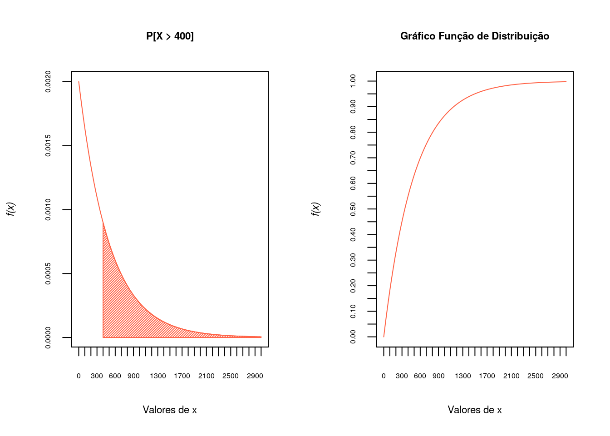
Modelo gaussiano ou normal
x <- seq(10,90,0.1)
fx <- dnorm(x,
mean = 50,
sd = 10
)
plot(x,
fx,
xlab = 'V.A',
ylab = 'f(x)',
type = 'l')
segments(x0 = 50, y0=0,
x1 = 50 , y1 = dnorm(mean(x),mean = 50, sd = 10))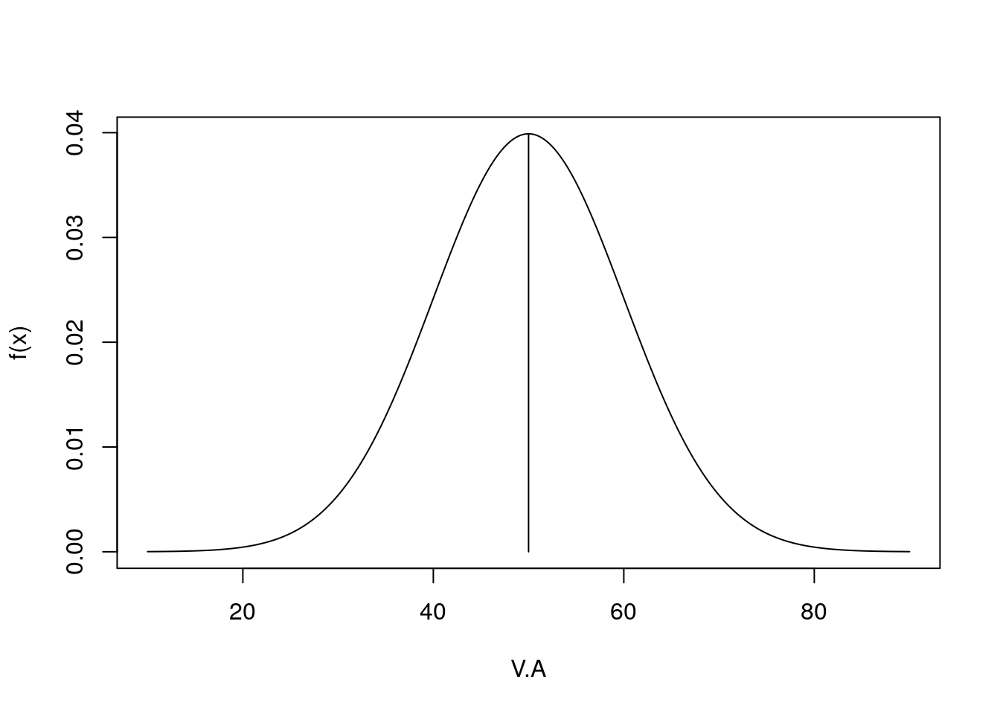
Distribuição normal padrão
# Z = X - media(x)/sd(x)
Z <-(x-mean(x))/sd(x)
summary(Z) Min. 1st Qu. Median Mean 3rd Qu. Max.
-1.7288 -0.8644 0.0000 0.0000 0.8644 1.7288 sd(Z)[1] 1fz <- dnorm(Z, mean = 0, sd = 1)
plot(Z,
fz,
type = "l",
xlab = "Z", ylab = "f(z)")
segments(x0 = 0, y0 = 0, x1 = 0, y1 = dnorm(mean(Z),0,1))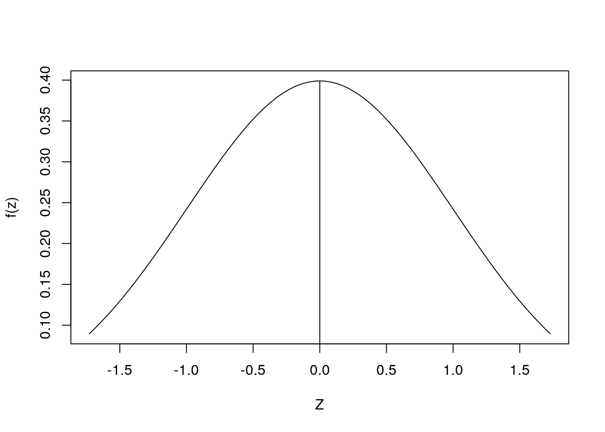
Escrevendo a função
fz <- function(z){
fz <- (1/sqrt(2*pi))*exp(-z^2/2)
return(fz)
}
## P[X <=30]
pnorm(q = 30,
mean = 50,
sd = 10)[1] 0.02275013pnorm((30-50)/10,
mean = 0,
sd = 1)[1] 0.02275013integrate(fz,
-Inf,
(30-50)/10)$value[1] 0.02275013pnorm(3)[1] 0.9986501integrate(fz,
-1,1)$value[1] 0.6826895par(mfrow=c(1,2))
## Gráfico da função densidade de probabilidade
z <- seq(-3, 3, 0.01)
fz <-dnorm(z,0,1)
plot(z,fz, type='l',xlab='Valores de x',
ylab=substitute(paste(italic('f(x)'))),cex.lab=.7,col='tomato')
title('Gráfico Função de Densidade de Probabilidade',cex.main=.7)
## Gráfico da função de distribuição
Fx<-pnorm(z,0,1)
plot(z, Fx, type = "l",
lwd=2, xlab='Valores de x',
ylab=substitute(paste(italic('F(x)'))),cex.lab=.7,col='tomato')
title('Gráfico Função de Distribuição',cex.main=.7)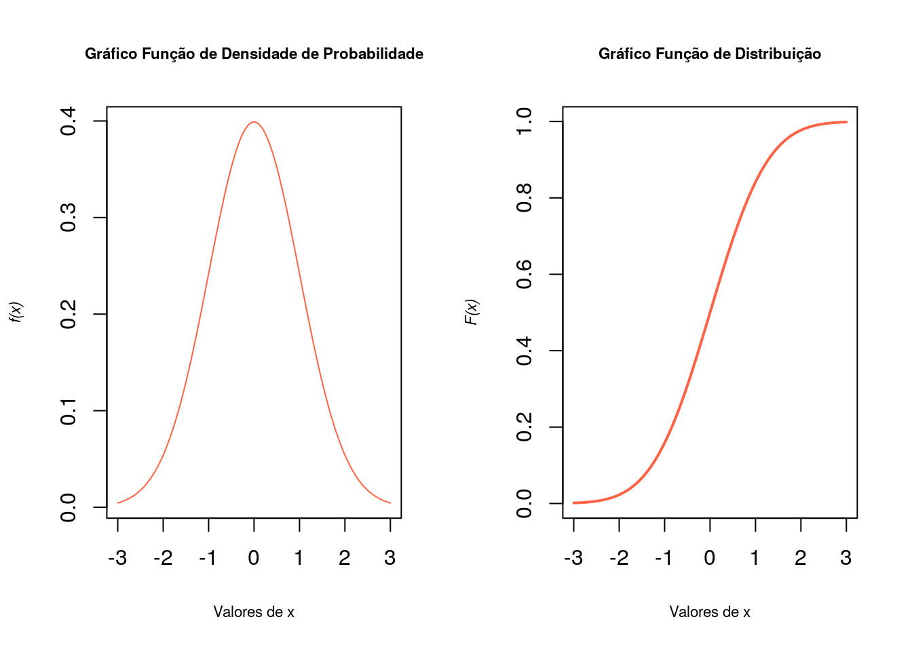

Este conteúdo está disponível por meio da Licença Creative Commons 4.0